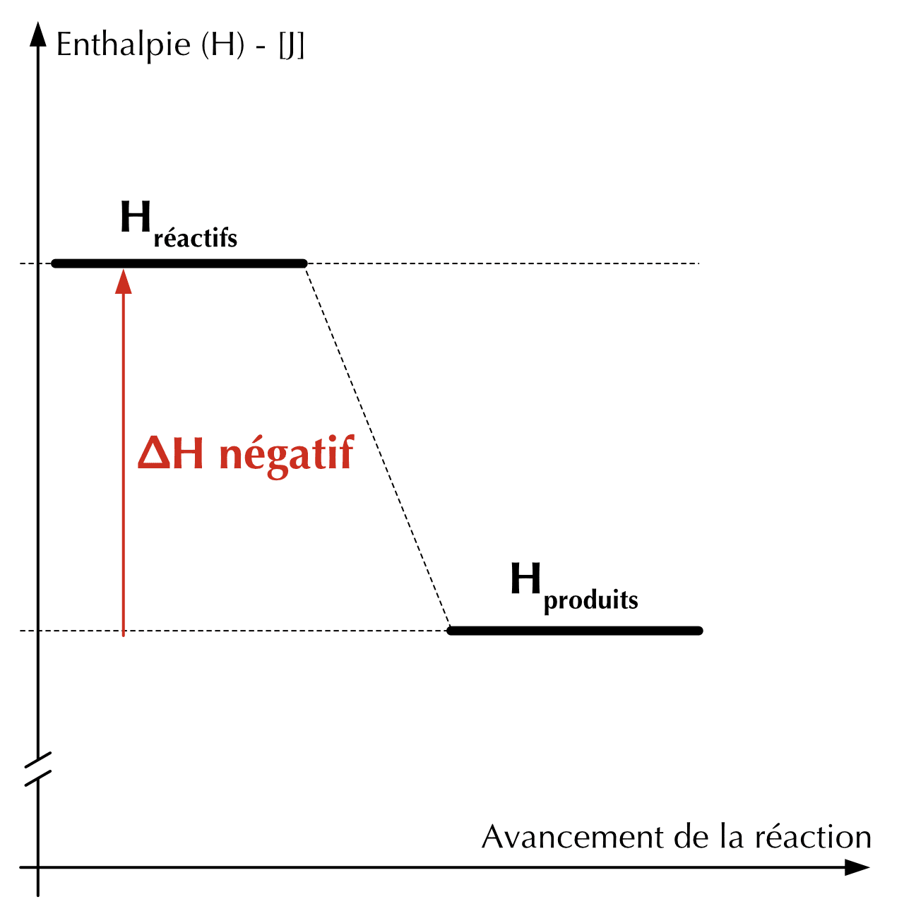
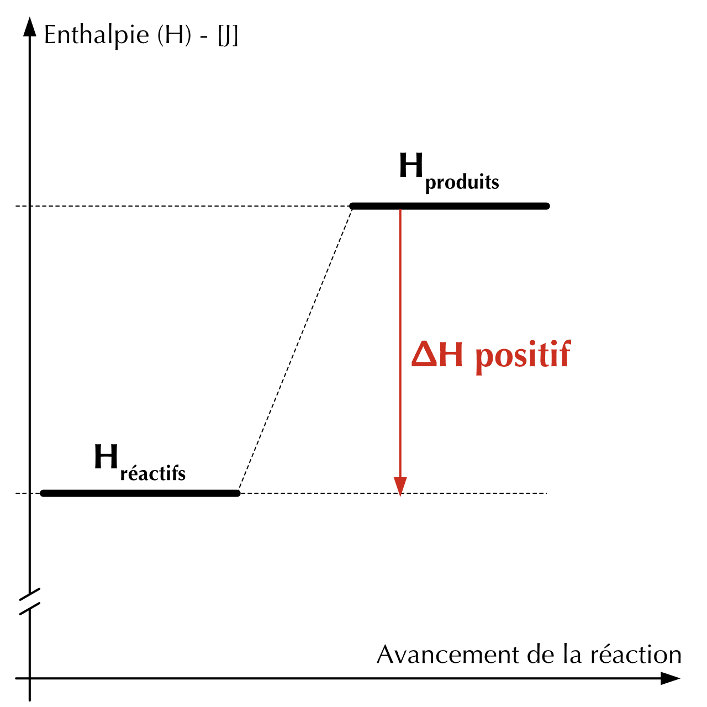
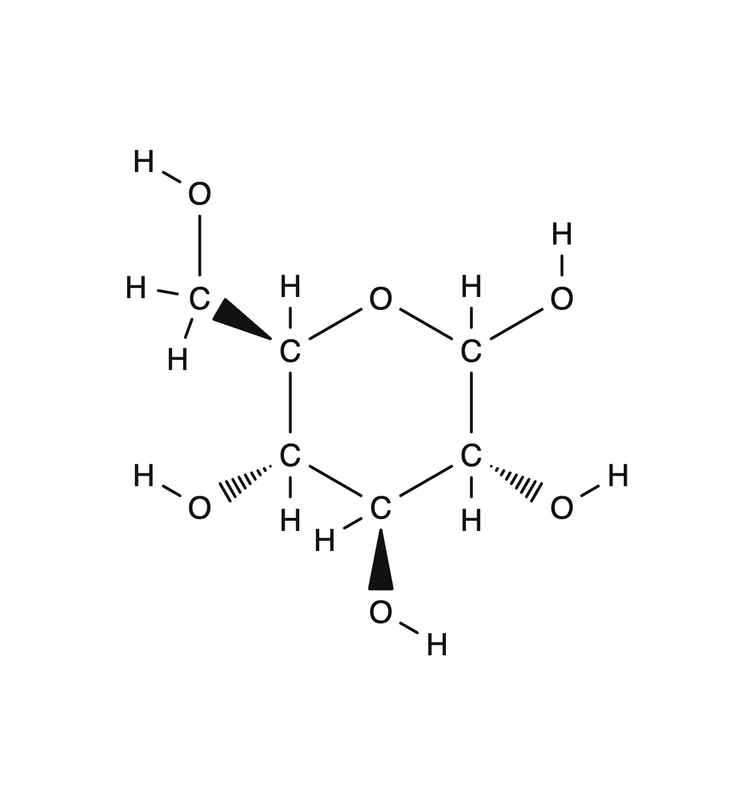
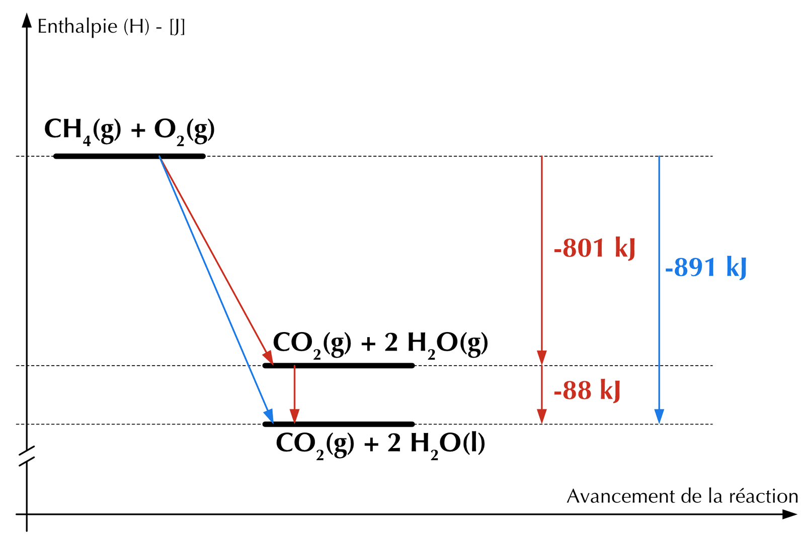
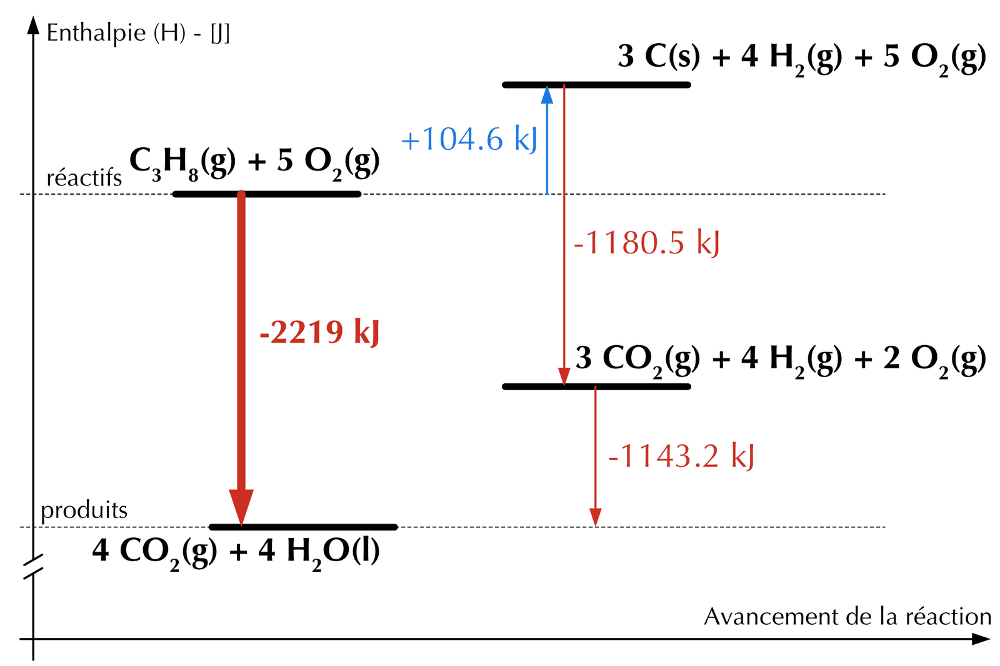

22 Thermochimie
- Définir les notions d’énergie, de travail et de chaleur.
- Énoncer la loi de la conservation de l’énergie ainsi que la première loi de la thermodynamique.
- Utilisez la capacité thermique pour calculer des pertes ou des gains de chaleur.
- Décrire le fonctionnement d’un calorimètre.
- Définir les notions d’enthalpie et de variation d’enthalpie.
- Décrire comment la quantité de chaleur d’une réaction est reliée aux quantités de substances.
- Décrire comment l’enthaplie de réaction est reliée à l’exo/endo-thermie.
- Calculer les variations d’enthalpie en utilisant les énergies de liaison.
- Utiliser la loi de Hess pour déduire la valeur d’une enthalpie inconnue.
L’énergie est à l’origine de toute transformation physique ou chimique. Aussi bien dans la transformation d’énergie lumineuse en énergie chimique lors de la photosynthèse, ou encore la libération d’énergie sous forme de lumière et de chaleur lors de la combustion d’une bûche, l’énergie rend la vie possible.
La thermodynamique est l’étude de l’énergie et de ses transformations. Dans ce chapitre, nous allons nous concentrer sur la thermochimie, c’est-à-dire les transferts d’énergie, et en particulier de chaleur, au cours des réactions chimiques.
22.1 Énergie
Énergie
Capacité à fournir un travail ou à transférer de la chaleur.
Contrairement à la matière, l’énergie n’a pas de masse et ne peut être tenue dans nos mains, mais ses effets peuvent être observés et mesurés. L’énergie est une grandeur physique qui caractérise l’état d’un système et qui, de manière globale, est conservée au cours des transformations. Le travail est l’énergie utilisée pour déplacer un objet contre une force et la chaleur est l’énergie utilisée pour faire augmenter la température d’un objet.
En chimie, le travail est défini comme une transfert d’énergie, résultant d’une transformation.
Un objet peut posséder de l’énergie sous différentes formes :
- l’énergie cinétique, qui est l’énergie due au mouvement de l’objet,
- l’énergie potentielle, qui est l’énergie qu’un objet possède en vertu de sa position par rapport à d’autres objets,
- L’énergie de radiation, qui est l’énergie des ondes électromagnétiques,
- L’énergie thermique, associée au mouvement aléatoire des atomes et des molécules,
- L’énergie chimique, stockée dans les liaisons des composés chimiques.
L’unité du Système International de l’énergie est le joule (J) : \(1 \text{ J} = 1 \mathrm{kg \cdot m^2 / s^2} = 1 \text{ N/m}\). Une autre unité d’énergie courante est la calorie (cal), définie comme la quantité d’énergie nécessaire pour augmenter de 1°C la température de 1 gramme d’eau : 1 cal = 4.184 J.
22.2 Système et environnement
Lorsque nous étudions les transferts d’énergie, nous devons nous concentrer sur une partie limitée et bien définie de l’univers. La partie isolée pour être étudiée est appelée le système, tout le reste est appelé l’environnement. Lorsque l’on étudie les transferts d’énergie qui accompagnent une réaction chimique, les réactifs et les produits constituent le système. Le récipient et tout ce qui se trouve au-delà sont considérés comme l’environnement.
Un système peut être ouvert, fermé ou isolé.
| Un système est ouvert | S’il permet des échanges d’énergie et de matière avec l’environnement. |
| Un système est fermé | S’il peut échanger de l’énergie mais pas de matière avec l’environnement |
| Un système est isolé | s’il ne peut échanger ni matière, ni énergie avec l’environnement |
L’énergie peut être transférée entre le système et l’environnement sous forme de travail ou de chaleur.
- Le travail est l’action d’une force qui agit sur un objet à distance pour le déplacer.
- La chaleur est l’énergie qui est transférée d’un objet plus chaud à un objet plus froid.
Presque toutes les réactions chimiques absorbent ou libèrent de l’énergie, généralement sous forme de chaleur.
- La chaleur peut être transmise,
(d’une substance qui est chaude vers une substance qui est froide.) - La chaleur peut être absorbée.
- La chaleur peut être libérée.
La température et la chaleur ne sont pas la même chose :
- La température est une mesure du degré d’agitation moyen des particules d’une substance.
- La chaleur est la quantité d’énergie qui est transferée lors d’une transformation.
22.3 Première loi de la thermodynamique
Loi de la conservation de l’énergie
Lors d’un changement physique ou chimique, il n’y a pas de création ou de destruction d’énergie.
La loi de la conservation de l’énergie stipule que l’énergie totale d’un système isolé est constante. Cela signifie qu’à l’intérieur d’un système isolé, l’énergie peut être modifiée ou transformée, mais qu’elle ne peut pas être créée ou détruite. La quantité totale d’énergie reste invariable.
Répondez aux questions suivantes.
- Quelle est la différence entre la chaleur et la température ?
- Qu’appelle-t-on un système « isolé » ? Peut-il échanger de la matière ? de l’énergie ?
- Énoncez la loi de conservation de l’énergie.
- Que représente la variation d’enthalpie \(\Delta H\) d’une réaction, et que signifie son signe ?
- La température mesure le degré d’agitation moyen des particules ; la chaleur est la quantité d’énergie transférée d’un corps chaud vers un corps froid lors d’une transformation.
- Un système isolé n’échange ni matière ni énergie avec l’environnement. (Un système fermé échange de l’énergie mais pas de matière ; un système ouvert échange les deux.)
- Lors d’un changement physique ou chimique, l’énergie n’est ni créée ni détruite : l’énergie totale d’un système isolé reste constante.
- \(\Delta H = H_{produits} - H_{réactifs}\) est la chaleur échangée à pression constante. \(\Delta H < 0\) : réaction exothermique (le système libère de la chaleur) ; \(\Delta H > 0\) : réaction endothermique (le système absorbe de la chaleur).
22.4 Calorimétrie
La quantité de chaleur transférée entre le système et son environnement est mesurée par calorimétrie.
La capacité thermique, ou chaleur spécifique, d’une substance (C) indique la capacité de cette substance d’absorber ou de dégager de la chaleur. C’est la quantité de chaleur qu’un gramme d’une substance doit absorber pour élever sa température d’un degré Celsius. Cette grandeur est exprimée en \(\mathrm{J/(K \cdot g)}\). Chaque substance a une capacité thermique qui lui est propre, celle de l’eau est de 4.184 \(\mathrm{J/(K \cdot g)}\).
Plus la capacité thermique d’une substance est élevée, plus il faut la chauffer pour augmenter sa température. Une substance ayant une faible capacité thermique se réchauffe rapidement, mais se refroidit aussi rapidement.
La quantité de chaleur, \(q\), absorbée par une substance est le produit de sa chaleur spécifique, \(C\), de sa masse et de la variation de température :
\[ \begin{split} q = m \cdot C_p \cdot \Delta T \end{split} \qquad \begin{split} q & \text{: quantité de chaleur}\ \text{ J} \\ m & \text{: masse}\ \text{ g} \\ C_p & \text{: capacité thermique}\ \mathrm{J/(K \cdot g)} \\ \Delta T & \text{: différence de température}\ \text{ K} \end{split} \]
800 g d’eau sont chauffés d’une température de 21°C à 85°C . Quelle quantité de chaleur l’eau a-t-elle absorbée ?
\[ \begin{split} q_{\ce{H2O}} &= m_{\ce{H2O}} \cdot C_{p\ \ce{H2O}} \cdot \Delta T_{\ce{H2O}} \\ &= 800\ \text{ g} \cdot 4.184 \mathrm{J/(K \cdot g)} \cdot (85-21) \\ &= 214221\ \text{ J} = 214.2\ \text{ kJ} \end{split} \]
Un morceau de métal inconnu pèse 348 g. Lorsque le morceau de métal absorbe 6.64 kJ de chaleur, sa température passe de 22.4°C à 43.6°C. Déterminez la chaleur spécifique de ce métal et déterminez de quel métal il s’agit.
\[ \begin{split} q_{\ce{m}} &= m_{\ce{m}} \cdot C_{p\ \ce{m}} \cdot \Delta T_{\ce{m}} \end{split} \qquad \Rightarrow \qquad \begin{split} C_{p\ \ce{m}} &= \frac{q_{\ce{m}}}{m_{\ce{m}} \cdot \Delta T_{\ce{m}}} \\ &= \frac{6.64 \cdot 10^3\ \text{ J}}{348\ \text{ g} \cdot (43.6 - 22.4)} \\ &= 0.900\ \mathrm{J/(K \cdot g)} \\ \end{split} \]
Le métal pourrait être de l’aluminium \(C_{p\ \ce{Al}} = 0.897\ \mathrm{J/(K \cdot g)}\).
On mélange 25 mL d’eau à 23°C avec 35 mL d’eau à 80°C. Quelle sera la température finale du mélange, si aucune chaleur n’est transférée à l’environnement ?
Le système n’échange pas de chaleur avec l’environnement :
\[ \begin{split} q_{\text{dégagée}} &+ q_{\text{absorbée}} = 0 \\ q_{\text{dégagée}} &= - q_{\text{absorbée}} \end{split} \]
\[ \begin{split} q_{\text{dégagée}} &= m_1 \cdot C_{p\ 1} \cdot \Delta T_1 \\ &= 35\ \text{ g} \cdot 4.184\ \mathrm{J/(K \cdot g)} \cdot (T_f - 80) \\ &= 146.44 \cdot T_f - 11715.2 \\ \end{split} \qquad \begin{split} q_{\text{absorbée}} &= m_2 \cdot C_{p\ 2} \cdot \Delta T_2 \\ &= 25\ \text{ g} \cdot 4.184\ \mathrm{J/(K \cdot g)} \cdot (T_f - 23) \\ &= 104.6 \cdot T_f - 2405.8 \\ \end{split} \]
\[ \begin{split} q_{\text{dégagée}} &= - q_{\text{absorbée}} \\ 146.44 \cdot T_f - 11715.2 &= - 104.6 \cdot T_f + 2405.8 \\ 146.44 \cdot T_f + 104.6 \cdot T_f &= 11715.2 + 2405.8 \\ T_f \cdot (146.44 + 104.6) &= 11715.2 + 2405.8 \\ T_f &= \frac{11715.2 + 2405.8}{146.44+104.6} = 56.25\ \text{°C} \end{split} \]
22.4.1 Le calorimètre
Pour mesurer la quantité de chaleur libérée ou absorbée au cours d’une réaction chimique. On utilise un récipient spécial dans un système fermé appelé calorimètre.
Le transfert d’énergie thermique accompagnant une réaction chimique est responsable du changement de température qui a lieu dans un calorimètre. Si la réaction libère de la chaleur, la chaleur est absorbée par le calorimètre et sa température augmente. Inversement, si la réaction absorbe de la chaleur, alors la chaleur est transférée du calorimètre au système et la température du calorimètre diminue.
La quantité de chaleur absorbée ou libérée par le calorimètre est égale et de signe opposé à la quantité de chaleur produite ou consommée par la réaction.
22.5 Réactions exothermiques et endothermiques
Certaines transformations chimiques dégagent de l’énergie alors que d’autres absorbent l’énergie. On parlera alors de réaction exothermique et endothermique.
Lorsqu’un processus se produit au cours duquel le système libère de la chaleur, le processus est dit exothermique. La chaleur est transférée du système à l’environnement.
Un processus dans lequel le système absorbe de la chaleur est dit endothermique. La chaleur est transférée au système par l’environnement.
En tenant compte de l’énergie échangée dans une équation chimique, on peut les écrire de la façon suivante :
\[ \begin{split} \text{Réactifs} & \rightarrow \text{Produits} + \text{Chaleur} \\ \text{Chaleur} + \text{Réactifs} & \rightarrow \text{Produits} \end{split} \quad \begin{split} &\text{Réaction exothermique} \\ &\text{Réaction endothermique} \end{split} \]
22.6 L’enthalpie (\(H\)) et la variation d’enthalpie (\(\Delta H\))
Il existe deux types fondamentaux d’énergie : l’énergie potentielle et l’énergie cinétique. L’énergie potentielle est une énergie stockée qui attend d’être libérée. L’énergie cinétique, en revanche, est l’énergie transformée en mouvement. Lorsque l’eau tombe d’un barrage et fait tourner une turbine, l’énergie potentielle de l’eau est convertie en énergie cinétique. Une fois que toute l’énergie potentielle a été convertie, il ne se passe plus rien. L’eau au fond du barrage n’a plus d’énergie potentielle et ne subit plus de changement.
Dans les composés chimiques, l’énergie potentielle est contenue dans les forces d’attraction entre les ions ou les atomes qui forment les liaisons et la rupture de ces liaisons nécessite un apport d’énergie. Dans les réactions chimiques, certaines liaisons chimiques des réactifs sont rompues (apport d’énergie) pour que de nouvelles liaisons puissent se former dans les produits (libération d’énergie).
Si les produits de la réaction ont moins d’énergie potentielle que les réactifs, on dit que les produits sont plus stables que les réactifs. Le terme stable est utilisé en chimie pour décrire une substance dont l’énergie potentielle est faible et qui, par conséquent, aura peu tendance à subir d’autres transformations. Le fait qu’une réaction se produise, et la quantité d’énergie ou de chaleur associée à la réaction, dépendent de la différence de quantité d’énergie potentielle contenue dans les réactifs et les produits.
La somme des énergies cinétique et potentielle correspond à l’enthalpie de la substance, \(H\).
Enthalpie - \(H\)
Énergie totale d’un système à pression constante. (Exprimée en joules J).
Cependant, il est difficile de déterminer expérimentalement l’énergie interne d’une substance. Mesurer des différences d’énergie par la chaleur absorbée ou dégagée lors de transformations est une grandeur plus facilement accessible.
Variation d’enthalpie - \(\Delta H\)
Variation de l’énergie totale du système lors d’une transformation, à pression constante.
La chaleur, dégagée ou absorbée, qui est mesurée lorsqu’une réaction est maintenue à pression constante est représentées par le symbole \(\Delta H\). Ainsi, la valeur de \(\Delta H\) représente le changement d’enthalpie qui se produit au cours d’une réaction. Les termes enthalpie de réaction et chaleur de réaction sont utilisés pour dénommer cette valeur.
De manière générale, pour déterminer la variation d’enthalpie, on effectue la différence entre l’enthalpie des produits et celle des réactifs.
\[ \Delta H = H _{\text{produits}} − H _{\text{réactifs}} \]
| Réaction exothermique | Réaction endothermique |
|---|---|
| \(\Delta H\) négatif | \(\Delta H\) positif |
 |
 |
Si la valeur est positive, la réaction est endothermique alors que si la valeur obtenue est négative, la réaction est exothermique.
Lorsque l’on donne une valeur numérique de chaleur de réaction, il faut spécifier la réaction étudiée. Par exemple, lorsque 2 moles de dihydrogène brûlent pour former 2 moles d’eau à pression constante, le système système libère 483.6 kJ.
\[ \ce{2 H2(g) + O2(g) -> 2 H2O(g) } \qquad \Delta H = -483.6\ \text{ kJ} \]
Le signe négatif de \(\Delta H\) indique que la réaction est exothermique. Le \(\Delta H\) est écrit à la fin de l’équation équilibrée, sans spécifier les quantités de produits chimiques impliqués.
22.7 Échanges de chaleur et réactions chimiques
Pourquoi le chlore réagit-il fortement avec de nombreux éléments et composés, mais pas l’azote ? Quelle est la différence entre les molécules de Cl2 et les molécules de N2 qui explique cette différence de réactivité ? La réponse est que la triple liaison azote-azote est beaucoup plus forte que la liaison simple chlore-chlore et qu’elle ne peut pas être rompue aussi facilement dans les réactions chimiques.
Énergie de liaison
Quantité d’énergie qui doit être fournie pour rompre une liaison et séparer les atomes d’une mole de molécules à l’état gazeux.
Plus l’énergie de liaison est élevée, plus la liaison entre les atomes ou les ions est stable. La triple liaison du diazote, par exemple, a une énergie de liaison de 946 kJ/mol, alors que la liaison simple dans le dichlore a une énergie de liaison de 243 kJ/mol. La plus grande stabilité de la triple liaison dans N2 explique pourquoi les molécules de diazote sont moins réactives que les molécules de Cl2.
\[ \begin{split} \ce{N#N -> N + N} \quad \Delta H = +946\ \text{ kJ/mol} \\ \ce{Cl-Cl -> Cl + Cl} \quad \Delta H = +246\ \text{ kJ/mol} \end{split} \]
| liaison | kJ/mol | liaison | kJ/mol | liaison | kJ/mol |
|---|---|---|---|---|---|
| \(\ce{C-H}\) | 413 | \(\ce{N-H}\) | 391 | \(\ce{C=C}\) | 614 |
| \(\ce{C-C}\) | 347 | \(\ce{N-N}\) | 160 | \(\ce{C#C}\) | 839 |
| \(\ce{C-N}\) | 305 | \(\ce{N-Cl}\) | 200 | \(\ce{C=O}\) | 7451 |
| \(\ce{C-O}\) | 358 | \(\ce{N-O}\) | 201 | \(\ce{O=O}\) | 498 |
| \(\ce{C-Cl}\) | 339 | \(\ce{H-H}\) | 432 | \(\ce{N=O}\) | 607 |
| \(\ce{Cl-Cl}\) | 243 | \(\ce{O-H}\) | 467 | \(\ce{O#N}\) | 891 |
| \(\ce{H-Cl}\) | 427 | \(\ce{O-Cl}\) | 203 | \(\ce{N#N}\) | 946 |
- La rupture de liaisons, un processus qui absorbe de la chaleur, est endothermique.
- La formation d’une liaison, un processus qui libère de la chaleur, est exothermique.
La quantité d’énergie libérée lors de la formation d’une liaison est égale à la quantié d’énergie abosrbée lors de la rupture de cette liaison. La quantité de chaleur transférée lors d’un changement dans un sens est égale à la quantité de chaleur transférée dans le sens opposé.
\[ \begin{split} \ce{N + N -> N#N} \quad \Delta H = -946\ \text{ kJ/mol} \\ \ce{Cl + Cl -> Cl-Cl} \quad \Delta H = -246\ \text{ kJ/mol} \end{split} \]
Dans toute réaction chimique, certaines liaisons des réactifs sont rompues et de nouvelles liaisons sont formées dans les produits. La différence entre l’énergie thermique absorbée lors de la rupture des liaisons et l’énergie thermique libérée lors de la formation des liaisons est la chaleur de réaction.
22.7.1 Bilan énergétique d’une réaction
Lorsque l’énergie totale des liaisons formées dans les produits est supérieure à l’énergie totale des liaisons rompues dans les réactifs, il en résulte que de l’énergie est libérée et la réaction est exothermique. Prenons par exemple la combustion d’une mole de méthane.
\[ \ce{CH4(g) + 2 O2(g) -> CO2(g) + 2 H2O(l)} \]
Calculons le \(\Delta H\) de la réaction :
\[ \begin{split} \text{Réactifs}& \\[0.1em] (\ce{C-H}) \times 4 = -413 \cdot 4 &= -1652\ \text{ kJ} \\[0.1em] (\ce{O=O}) \times 2 = -498 \cdot 2 &= -996\ \text{ kJ} \\[0.1em] \hline\\[-1.2em] total &= -2648\ \text{ kJ} \end{split} \qquad \begin{split} \text{Produits}& \\ (\ce{C=O}) \times 2 = -799 \cdot 2 &= -1598\ \text{ kJ} \\[0.1em] (\ce{H-O}) \times 4 = -467 \cdot 4 &= -1868\ \text{ kJ} \\[0.1em] \hline\\[-1.2em] total &= -3466\ \text{ kJ} \end{split} \]
\[ \begin{split} \Delta H &= H _{\text{produits}} − H _{\text{réactifs}} \\ &= -3466 -(-2648) = -818\ \text{ kJ}\ \text{(valeur estimée)} \end{split} \]
La valeur mesurée de la variation d’enthalpie pour la combustion d’une mole de méthane est de 891 kJ.
Les énergies données dans la table Table 22.1 sont des énergies moyennes et peuvent varier en fonction de l’environnement chimique dans lequel se trouve la liaison. Le \(\Delta H\) calculé pour une réaction en utilisant les énergies de liaison moyennes peut différer légèrement de la valeur obtenue expérimentalement.
\[ \ce{CH4(g) + 2 O2(g) -> CO2(g) + 2 H2O(l)} \qquad \Delta H = -891\ \text{ kJ} \]
Il est correct de dire :
- La combustion de 1 mole de méthane s’accompagne d’une perte de 891 kJ.
- La réaction de 2 moles de dioxygène avec le méthane s’accompagne d’une perte de 891 kJ.
- La réaction de 1 mole de dioxygène avec le méthane s’accompagne d’une perte de 446 kJ.
- La formation de 1 mole de gaz carbonique par combustion du méthane s’accompagne d’une perte de 891 kJ.
- La formation de 1 mole d’eau gazeuse par combustion du méthane s’accompagne d’une perte de 446 kJ.
On a donc le choix de la substance de référence, mais il faut le mentionner dans l’unité.
Estimer le \(\Delta H\), en kJ, de la réaction entre le dihydrogène et le dioxygène pour former de l’eau et indiquez si la réaction est endo- ou exothermique.
\[ \ce{2 H2(g) + O2(g) -> 2 H2O} \]
\[ \begin{split} \text{Réactifs}& \\ (\ce{H-H}) \times 2 = -432 \cdot 2 &= -864\ \text{ kJ} \\ (\ce{O=O}) \times 1 = -498 \cdot 1 &= -498\ \text{ kJ} \\ \hline total &= -1362\ \text{ kJ} \end{split} \qquad \begin{split} \text{Produits}& \\ (\ce{H-O}) \times 4 = -467 \cdot 4 &= -1868\ \text{ kJ} \\ \hline total &= -1868\ \text{ kJ} \end{split} \]
\[ \begin{split} \Delta H &= \Sigma\ E^{liaison}_{\text{produits}} - \Sigma\ E^{liaison}_{\text{réactifs}} \\ &= -1868-(-1362) = -506\ \text{ kJ} \end{split} \]
\(\Delta H\) négatif, donc réaction exothermique.
Calculez la quantité de chaleur libérée lors de la combustion de 7.50 g de méthane.
\[ \begin{split} \ce{CH4(g) + 2 O2(g) -> CO2(g) + 2 H2O(l)} \end{split} \qquad \begin{split} M_{\ce{CH4}} &= 1 \cdot 12 + 4 \cdot 1.008 \\ &= 16.032\ \text{ g/mol} \end{split} \]
\[ n_{\ce{CH4}} = \frac{m_{\ce{CH4}}}{M_{\ce{CH4}}} = \frac{7.50\ \text{ g}}{16.032\ \text{ g/mol}} = 0.468\ \text{ mol} \]
\[ \begin{split} \Delta H = -891\ \text{ kJ/mol} \end{split} \qquad \begin{split} q &= -891\ \text{ kJ/mol} \cdot 0.468\ \text{ mol} \\ &= -417\ \text{ kJ} \end{split} \]
La valeur négative indique que la chaleur est dégagée (réaction exothermique).
Durant la photosynthèse, les plantes convertissent le dioxyde de carbone et l’eau en glucose (\(\ce{C6H12O6}\)) selon l’équation équilibrée suivante:
\[ \ce{6 CO2(g) + 6 H2O(l) -> C6H12O6 + 6 O2(g)} \]
Estimez le \(\Delta H\) de la réaction en utilisant les énergies de liaisons et indiquez si la réaction est endo- ou exothermique.

\[ \ce{6 CO2(g) + 6 H2O(l) -> C6H12O6 + 6 O2(g)} \]
\[ \begin{split} \text{Réactifs}& \\ (\ce{C=O}) \times 12 = -799 \cdot 12 &= -9588\ \text{ kJ} \\ (\ce{O-H}) \times 12 = -467 \cdot 12 &= -5604\ \text{ kJ} \\ \hline total &= -15192\ \text{ kJ} \end{split} \qquad \begin{split} \text{Produits}& \\ (\ce{C-C}) \times 5 = -347 \cdot 5 &= -1735\ \text{ kJ} \\ (\ce{C-H}) \times 7 = -413 \cdot 7 &= -2891\ \text{ kJ} \\ (\ce{C-O}) \times 7 = -358 \cdot 7 &= -2506\ \text{ kJ} \\ (\ce{O-H}) \times 5 = -467 \cdot 5 &= -2335\ \text{ kJ} \\ (\ce{O=O}) \times 6 = -498 \cdot 6 &= -2988\ \text{ kJ} \\ \hline total &= -12455\ \text{ kJ} \end{split} \]
\[ \begin{split} \Delta H &= \Sigma\ E^{liaison}_{\text{produits}} - \Sigma\ E^{liaison}_{\text{réactifs}} \\ &= -12455 - (-15192) = +2737\ \text{ kJ} \end{split} \]
La production d’une mole de glucose par photosynthèse absorbe 2737 kJ.
La valeur positive indique que la réaction est endothermique.
22.8 La variation d’enthalpie standard (\(\Delta H^o\))
Les réactions pouvant se dérouler dans des conditions de température et de pression très variables, on défini une référence commune en utilisant les conditions standard. On considérera que les réactifs et les produits se trouvent dans leur état aux conditions standard.
- température : 298 K (25°C)
- pression : 1 bar (100 kPa)
- concentration : 1 mol/l dans le cas de solutions
De cette manière, on peut définir la variation d’enthalpie standard de toute réaction à l’aide des variations d’enthalpies standard de formation des réactifs et des produits.
\[ \Delta H^o = \sum n_p \cdot \Delta H^{o}_f(produits) - \sum n_r \cdot \Delta H^{o}_f(reactifs) \]
\(n_p\) et \(n_r\) sont les coéfficients stoechiométriques des réactifs et produits de la réaction étudiée.
À l’aide de la table d’enthalpie de formation ci-dessous, calculez la différence d’enthalpie des réactions suivantes :
- \(\ce{3H2_{(g)} + O3_{(g)} -> 3H2O_{(g)}}\)
- \(\ce{2NO_{(g)} + O2_{(g)} -> 2NO2_{(g)}}\)
- \(\ce{N2O_{(g)} + NO2_{(g)} -> 3NO_{(g)}}\)
| Substance | \(\Delta H^o_f\ \text{ kJ/mol}\) | Substance | \(\Delta H^o_f\ \text{ kJ/mol}\) |
|---|---|---|---|
| \(\ce{H2_{(g)}}\) | 0 | \(\ce{N2_{(g)}}\) | 0 |
| \(\ce{O2_{(g)}}\) | 0 | \(\ce{N_{(g)}}\) | 472.704 |
| \(\ce{O3_{(g)}}\) | 142.7 | \(\ce{NO_{(g)}}\) | 90.25 |
| \(\ce{H2O_{(g)}}\) | -241.82 | \(\ce{NO2_{(g)}}\) | 33.2 |
| \(\ce{H2O_{(l)}}\) | -285.83 | \(\ce{N2O_{(g)}}\) | 81.6 |
- \[ \begin{split} \Delta H^o &= [3 \cdot (-241.82)] - [3 \cdot 0 + 1 \cdot 142.7] \\ &= -868\ \text{ kJ/mol} \end{split} \]
- \[ \begin{split} \Delta H^o &= [2 \cdot 33.2] - [2 \cdot 90.25 + 1 \cdot 0] \\ &= -114\ \text{ kJ/mol} \end{split} \]
- \[ \begin{split} \Delta H^o &= [3 \cdot 90.25] - [1 \cdot 81.6 + 1 \cdot 33.2] \\ &= 156\ \text{ kJ/mol} \end{split} \]
22.9 La loi de Hess
On représente généralement une réaction chimique par une équation équilibrée avec des réactifs qui se transforment en produits. Cette représentation est une représentations simplifiée. Dans la majorité des réactions chimiques, les réactifs forment un ou plusieurs intermédiaires qui mènent aux produits. Ainsi, on peut décomposer une réaction en une succession de réactions intermédiaires. C’est ce qu’on appelle un mécanisme réactionnel.
Par exemple, la formation du dioxyde d’azote à partir d’oxyde d’azote et de dioxygène est une réaction qui comporte deux étapes intermédiaires.
\[ \begin{split} \ce{2 NO(g) -> N2O2(g)} \\[0.1em] \ce{N2O2(g) + O2 -> 2NO2(g)} \\[0.1em] \hline\\[-1.2em] \ce{2 NO(g) + O2 -> 2NO2(g)} \end{split} \]
La variation d’enthalpie lors d’une réaction ne dépend que de l’état initial des réactifs et de l’état final des produits si la transformation s’effectue soit à volume constant, soit à pression constante.
Loi de Hess
Si une réaction se déroule en plusieurs étapes, la variation d’enthalpie de la réaction est égale à la somme des variations d’enthalpie des différentes étapes.
L’échange de chaleur lors d’une transformation chimique ne dépend pas du chemin parcouru pour aller de l’état initial à l’état final.
\[ \begin{split} \ce{CH4(g) + 2 O2(g) -> CO2(g) + 2 H2O(g)} \qquad \Delta H &= -802\ kJ \\[0.1em] \ce{2 H2O(g) -> 2 H2O(l)} \qquad \Delta H &= -88\ kJ \\[0.1em] \hline\\[-1.2em] \ce{CH4(g) + 2 O2(g) -> CO2(g) + 2 H2O(l)} \qquad \Delta H &= -891\ kJ \end{split} \]

Pour déterminer la chaleur d’une réaction par la loi de Hess, on doit suivre certaines règles.
- Les termes identiques situés du même côté de l’équation s’additionnent.
- Les termes identiques situés de part et d’autre de l’équation se soustraient.
- Si on inverse une équation, on doit aussi inverser le signe du \(\Delta H\).
- Si on modifie les coefficients d’une équation chimique en les multipliant ou en les divisant par un facteur commun, on doit aussi multiplier ou diviser la valeur du \(\Delta H\) par ce même facteur.
22.9.1 Enthalpie de formation et enthalpies de réaction
Nous pouvons utiliser la loi de Hess pour calculer les variations d’enthalpie pour un grand nombre de réactions à partir de valeurs référencées dans des tables. Il existe des tableaux de chaleurs de vaporisation, de fusion, de combustion, etc..
Une transformation importante utilisée en thermochimie est la chaleur de formation ou enthalpie de formation. Elle est représentée par le symboles \(\Delta H^{0}_{f}\). L’indice “f” indique la réaction de formation du composé et l’indice “0”, indique que cette valeur est mesurée aux conditions standard de température et pression. On parlera de l’enthalpie standard de formation d’un composé.
L’enthalpie de formation est importante dans la mesure où elle nous permet de calculer une enthalpie de réaction.
Prenons, par exemple, la combustion du propane aux conditions standards :
\[ \ce{C3H8(g) + 5 O2(g) -> 3 CO2(g) + 4 H2O(l)} \]
Nous pouvons écrire cette équation comme la somme de trois équations associées aux enthalpies standards de formation :
\[ \begin{split} \ce{C3H8(g) -> 3 C(s) + 4 H2(g)} \qquad \Delta H_1 &= -\Delta H^{0}_{f}(\ce{C3H8(g)}) \\[0.1em] \ce{3 C(s) + 3 O2(g) -> 3 CO2(g)} \qquad \Delta H_2 &= 3\cdot\Delta H^{0}_{f}(\ce{CO2(g)}) \\[0.1em] \ce{4 H2(g) + 2 O2(g) -> 4 H2O(l)} \qquad \Delta H_3 &= 4\cdot\Delta H^{0}_{f}(\ce{H2O(l)}) \\[0.1em] \hline\\[-1.2em] \ce{C3H8(g) + 5 O2(g) -> 3 CO2(g) + 4 H2O(l)} \qquad \Delta H^{0} &= \Delta H_1 + \Delta H_2 + \Delta H_3 \end{split} \]
En remplaçant les enthalpies de formation par les valeurs contenues dans les tables :
\[ \begin{split} \Delta H^{0} &= \Delta H_1 + \Delta H_2 + \Delta H_3 \\ &= -\Delta H^{0}_{f}(\ce{C3H8(g)}) + 3\cdot\Delta H^{0}_{f}(\ce{CO2(g)}) + 4\cdot\Delta H^{0}_{f}(\ce{H2O(l)}) \\ &= - (−104.6\ \text{ kJ}) + 3 \cdot (−393.5\ \text{ kJ}) + 4 \cdot (−285.8\ \text{ kJ}) \\ &= -2219\ \text{ kJ} \\ \end{split} \]

En utilisant les deux équations ci-dessous, déterminez l’enthalpie de formation (\(\Delta H^0_f\)) du monoxyde d’azote, \(\ce{NO}\).
\[ \begin{split} \ce{4NH3_{(g)} + 5O2_{(g)}} & \ce{ -> 4NO_{(g)} + 6H2O_{(l)}} \quad \Delta H^0_1 = -1170\ kJ \\[0.5em] \ce{4NH3_{(g)} + 3O2_{(g)}} & \ce{-> 2N2_{(g)} + 6H2O_{(l)}} \quad \Delta H^0_2 = -1530\ kJ \end{split} \]
On cherche une enthalpie de formation. L’équation chimique que l’on cherche sera de la forme.
\[ \ce{1/2 N2_{(g)} + 1/2 O2_{(g)} -> NO_{(g)} } \]
On inverse la seconde équation et on inverse également le signe de \(\Delta H^0_2\).
\[ \begin{split} \ce{4NH3_{(g)} + 5O2_{(g)}} & \ce{ -> 4NO_{(g)} + 6H2O_{(l)}} \quad \Delta H^0 = -1170\ kJ \\ \ce{2N2_{(g)} + 6H2O_{(l)}} & \ce{-> 4NH3_{(g)} + 3O2_{(g)}} \quad \Delta H^0 = +1530\ kJ \end{split} \]
On fait le bilan pour obtenir une équation globale :
\[ \begin{aligned} \ce{\cancel{\ce{4NH3{(g)}}} + 5O2_{(g)}} & \ce{-> 4NO_{(g)} + \cancel{\ce{6H2O_{(l)}}}} \quad &\Delta H^0 = -1170\ kJ \\ \ce{2N2_{(g)} + \cancel{\ce{6H2O_{(l)}}}} & \ce{-> \cancel{\ce{4NH3_{(g)}}} + 3O2_{(g)}} \quad &\Delta H^0 = +1530\ kJ \\[0.5em] \hline\\[-1.2em] \ce{2N2_{(g)} + 2O2_{(g)}} & \ce{-> 4NO_{(g)}} \quad &\Delta H^0 = +360\ kJ \end{aligned} \]
Une réaction d’enthalpie de formation est exprimée pour une mole de formé. Par conséquent, on divise tous les termes de l’équation par 4, y compris \(\Delta H^0\).
\[ \ce{1/2 N2_{(g)} + 1/2 O2_{(g)} -> NO_{(g)}} \quad \Delta H^0 = +90\ kJ \]
22.10 Résumé
- L’énergie est la capacité à fournir un travail ou à transférer de la chaleur. Le travail déplace un objet contre une force ; la chaleur est l’énergie transférée d’un corps chaud vers un corps froid. La température et la chaleur sont des grandeurs distinctes
- Unité : le joule (1 cal = 4.184 J).
- L’énergie ne peut être ni créée ni détruite ; l’énergie totale d’un système isolé est constante.
- Un système est ouvert, fermé ou isolé selon qu’il échange matière et/ou énergie avec l’environnement.
- L’enthalpie \(H\) est l’énergie totale d’un système à pression constante ; la variation d’enthalpie est la chaleur de réaction (à pression constante).
- \(\Delta H < 0\) : réaction exothermique ; \(\Delta H > 0\) : réaction endothermique. La valeur de \(\Delta H\) est proportionnelle aux quantités de matière : il faut préciser la substance de référence.
- L’énergie de liaison est l’énergie nécessaire pour rompre une mole de liaisons à l’état gazeux. Rompre une liaison est endothermique, en former une est exothermique.
- La variation d’enthalpie standard (\(\Delta H^0\)) se calcule à partir des enthalpies standard de formation.
- \(\Delta H\) ne dépend que des états initial et final, pas du chemin suivi.
- On peut combiner des réactions pour obtenir l’enthalpie d’une réaction inconnue.
22.11 Exercices supplémentaires
Un calorimètre à glace permet de mesurer des quantités de chaleur en déterminant la quantité de glace fondue. Combien de grammes de glace peut-on faire fondre grâce à la chaleur libérée par la combustion de 875 mL de CH4 gazeux, mesurés à 25°C et à 99.7 kPa ?
\[ \begin{split} \ce{CH4(g) + 2 O2(g) -> CO2(g) + 2 H2O(l)} \qquad & \Delta H = - 890.3\ \text{ kJ} \\ \ce{H2O(s) -> H2O(l)} \qquad & \Delta H_{fusion} = 6.01\ \text{ kJ} \end{split} \]
\[ \ce{CH4(g) + 2 O2(g) -> CO2(g) + 2 H2O(l)} \qquad \Delta H = - 890.3\ \text{ kJ} \]
Calcul de la quantité de \(\ce{CH4}\) brûlée :
\[ \begin{split} p \cdot V = n \cdot R \cdot T \end{split} \qquad \begin{split} \Rightarrow n &= \frac{p \cdot V}{R \cdot T} = \frac{99.7 \cdot 10^{3}\ \text{ Pa} \cdot 8.75 \cdot 10^{-4}\ \mathrm{m^3}}{8.314\ \mathrm{\frac{J}{K \cdot mol}} \cdot 298.15\ \text{ K}} \\ &= 0.0352\ \text{ mol} \text{ de \ce{CH4}} \end{split} \]
La combustion de 1 mole de \(\ce{CH4}\) va libérer 890.3 kJ donc,
La combustion de 0.0352 mole de \(\ce{CH4}\) va libérer \(0.0352\ \text{ mol} \cdot 890.3 \mathrm{\frac{kJ}{mol}} = 31.34\ \text{ kJ}\).
6.01 kJ feront fondre 18.016 grammes d’eau donc,
31.34 kJ feront fondre 93.9 grammes d’eau.
On plonge un morceau de fer de 150 g, chauffé à 95°C, dans 200 g d’eau à 20°C, dans un calorimètre parfaitement isolé. Capacités thermiques : \(C_p(\ce{Fe}) = 0.449\) J/(K·g), \(C_p(\ce{H2O}) = 4.184\) J/(K·g). Calculez la température finale du système.
Dans un calorimètre isolé, la chaleur cédée par le fer est absorbée par l’eau : \(q_{\ce{Fe}} + q_{\ce{H2O}} = 0\).
\[ 150 \cdot 0.449 \cdot (T_f - 95) + 200 \cdot 4.184 \cdot (T_f - 20) = 0 \] \[ 67.35 \cdot (T_f - 95) + 836.8 \cdot (T_f - 20) = 0 \] \[ (67.35 + 836.8) \cdot T_f = 67.35 \cdot 95 + 836.8 \cdot 20 = 23134 \] \[ T_f = \frac{23134}{904.15} = 25.6 \text{ °C} \]
Déterminez l’enthalpie de la réaction \(\ce{C(s) + 1/2 O2(g) -> CO(g)}\) à partir des données suivantes :
- \(\ce{C(s) + O2(g) -> CO2(g)}\), \(\Delta H_1 = -393.5\) kJ
- \(\ce{CO(g) + 1/2 O2(g) -> CO2(g)}\), \(\Delta H_2 = -283.0\) kJ
On conserve la première équation et on inverse la seconde (en changeant le signe de son \(\Delta H\)) :
\[ \begin{aligned} \ce{C(s) + O2(g)} &\ce{-> CO2(g)} \qquad &\Delta H_1 &= -393.5 \text{ kJ} \\ \ce{CO2(g)} &\ce{-> CO(g) + 1/2 O2(g)} \qquad &-\Delta H_2 &= +283.0 \text{ kJ} \end{aligned} \]
En additionnant, \(\ce{CO2}\) et une partie du \(\ce{O2}\) se simplifient :
\[ \ce{C(s) + 1/2 O2(g) -> CO(g)} \qquad \Delta H = -393.5 + 283.0 = -110.5 \text{ kJ} \]
Estimez, à l’aide des énergies de liaison, la variation d’enthalpie de la synthèse de l’ammoniac :
\[ \ce{N2(g) + 3 H2(g) -> 2 NH3(g)} \]
La réaction est-elle exo- ou endothermique ? Énergies de liaison : \(\ce{N#N}\) = 946, \(\ce{H-H}\) = 432, \(\ce{N-H}\) = 391 kJ/mol.
\[ \begin{split} \text{Réactifs}& \\ (\ce{N#N}) \times 1 &= -946\ \text{kJ} \\ (\ce{H-H}) \times 3 = -432 \cdot 3 &= -1296\ \text{kJ} \\ \hline total &= -2242\ \text{kJ} \end{split} \qquad \begin{split} \text{Produits}& \\ (\ce{N-H}) \times 6 = -391 \cdot 6 &= -2346\ \text{kJ} \\ \hline total &= -2346\ \text{kJ} \end{split} \]
\[ \Delta H = \Sigma\ E^{liaison}_{\text{produits}} - \Sigma\ E^{liaison}_{\text{réactifs}} = -2346 - (-2242) = -104\ \text{kJ} \]
\(\Delta H < 0\) : la réaction est exothermique. (Chaque molécule \(\ce{NH3}\) comporte 3 liaisons \(\ce{N-H}\), soit 6 pour 2 molécules.)
Énergie de la liaison \(\ce{C=O}\) dans \(\ce{CO2}\) est de 799 kJ/mol.↩︎